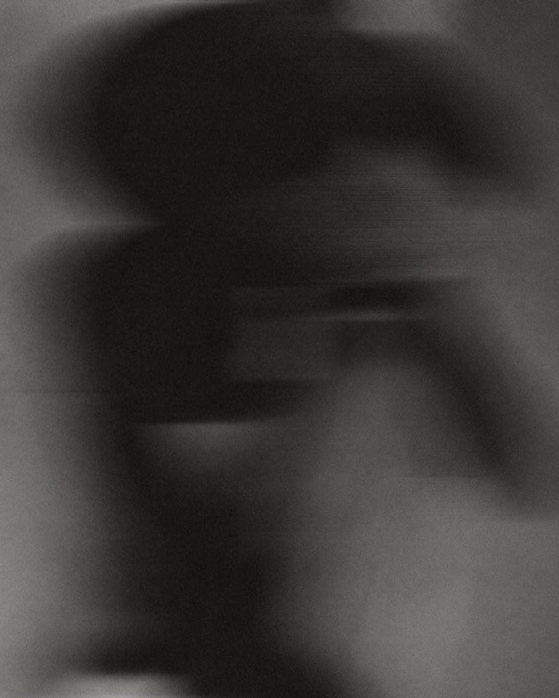
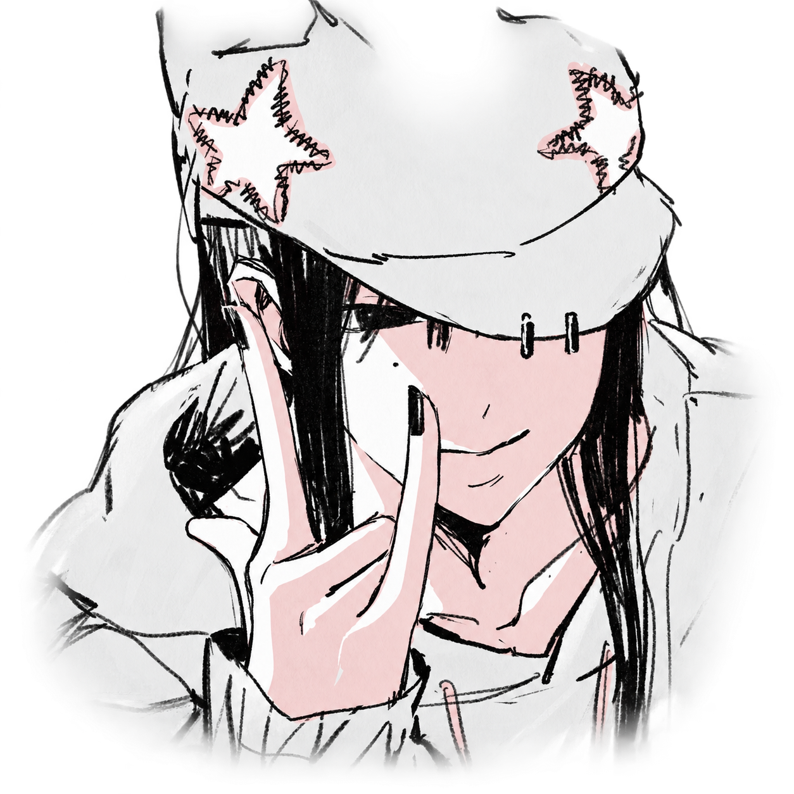
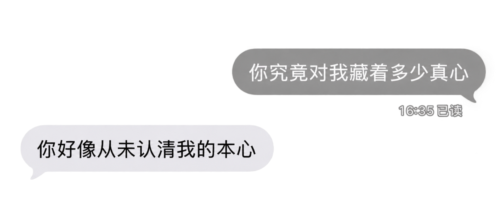

自我介绍
这里存放我的文字、偏爱与被记住的瞬间。
你正在看到的，是尚未完成的一个切面。


这里存放我的文字、偏爱与被记住的瞬间。
你正在看到的，是尚未完成的一个切面。
“给散落的念头，一个可以停留的地方。”
不是雨季，却接连下了几天的雨。几天不在家，马桶里都生出了跟头虫
好像是花粉或蛾子粉尘通过窗户带进来的。按下冲水按钮，蠕动的跟头虫随着旋涡消失了
构成世界的物质出人意料地容易腐烂
擦地，腾空冰箱，往浴室里喷了酸性洗涤剂之后，我躺在地板上。
油地毡冰冷的气息直抵脸颊。外面不断传来噪声。那是汽车画着犹如星星轨迹般的长尾巴行驶在公路上的声音。
感觉疲劳缓解了，身体里的血液也恢复了正常的速度。我像死了似的趴了会儿，竟然在地板上睡着了。
偶尔传来救护车的警笛声和摩托车的噪声。陨石没能进入睡梦深处
只在梦境之外撕破凌乱的星云，一闪而过。我蜷缩起身体。我

把被记住的话，收进这里。
03 张示意图片 · 点击进入后可逐张放大
此处预留真实评价截图，目前仅展示参考素材。
留下一些不想遗忘的瞬间。
链接待添加02 / ARCHIVE存放作品、灵感与心头所好。
链接待添加03 / ARCHIVE给下一段故事留一个入口。
链接待添加